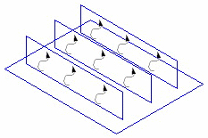

To access: Open the Solver Control tab.
Use this tab to control the solution.
Field |
Description |
|---|---|
Solver Option |
Sets the type of solution. For most calculations, the default Multi Grid solver is the best option.
|
Outer Iteration |
The maximum number of outer iterations for a steady calculation and the maximum number at each time step for a transient calculation. Each outer iteration results in the solution of all differential equations expressed in quasi-linear form. The default is set to 500. For the majority of calculations, several hundred iterations will be needed to converge the solution to a satisfactory level, however, the exact setting of the number of outer iterations is not critical because:
|
Fan Relaxation |
An advanced control that is sometimes required when using non-linear fans; see “Fan Relaxation” for details. Setting this parameter to less than 1, for example 0.7, may help achieve convergence. |
Activate Plate Conduction |
Activates the linear
embedded conduction solver, enabling full conjugate heat transfer
in 2D solid objects, as shown below:
 This option provides a more physically correct representation for heat associated with solid, thin objects, but there is an additional grid mesh overhead that will result in increased memory requirements. Details of the mesh size is provided during the solve by information message I/9033. The Joule Heating and Surface Exchange settings on collapsed cuboids have no effect when plate conduction is activated. For information on the precedence rules, see “Context Rules for Plate Conduction”. By default, Activate Plate Conduction is switched off and a simplified linear solver is used, which does not enable full conjugate heat transfer of 2D solid objects, but requires less memory. CAUTION:
When plate conduction is activated, a Heat Pipe or Network Assembly is included in the project, you must use Re-Initialize and Solve when editing a solved project, clicking the Solve Start icon may lead to incorrect results. |
Use Double Precision Solver |
Refer to “Double-Precision Solver”. This setting is saved with the project. |
Network Assembly Block Correction |
This setting may be useful when the project contains one or more network assemblies and the solution is very slow to finish, typically, the temperature residual showing little sign of reducing. Note that in some cases its activation may increase the solution time. |
Multi Grid Damping |
An advanced control that adds increased damping control when Solver Option is set to Multi Grid (the default setting). Only use this option if the Multi Grid solution exhibits divergent behavior. Alternatively, use the Segregated Conjugate Residual solver. Note:
Although this setting prevents divergence, it may result in some slow down in convergence in normal situations. For this reason, this setting should only be activated when required. See “Multi Grid Damping”. |
Freeze Flow |
An advanced control that deactivates the solution of flow but retains the stored variables, hence effectively freezing the flow solution. Freeze flow can be useful in the following situations:
CAUTION:
You should only use the Freeze Flow option in cases strongly dominated by forced convection. Buoyancy forces involve direct coupling between the temperature and vertical velocity field, and failure to solve for the velocities would invalidate any results from the parametric study. |
Error Field |
An advanced control that stores the field of residuals for a selected variable. After solution, the Field Error scalar field contains the local residual errors for the selected variable. To identify areas where the program may have difficulty in converging, create a plane plot showing the Error Field scalar values and set the Fill Type to Contour Lines. You can then focus attention on the grid, project setup, and assumptions in the areas of difficulty. See “Error Field”. |
Error Variable |
(Error Field) Select the variable type. |
Estimated Free Convection Velocity |
Estimated Free Convection Velocity (EFCV) is used to calculate the False Time Step Relaxation values and Termination Residuals. The EFCV needs to be set for situations in which the flow is driven solely by natural convection, when the buoyancy forces are of importance. That is, when there is no forced flow, for example, as generated by fans or fixed flow SmartParts. Typically, in electronic enclosures, the free convection velocity will vary between 0.1 m/s to 1.0 m/s depending on the heat dissipated, the enclosure height, and the resistances to airflow within the enclosure. The software assumes a default of 0.2 m/s. You need only estimate EFCV; you do not need to know it exactly, as Simcenter Flotherm calculates the airflow pattern. If you set EFCV to the maximum anticipated velocity, it will have the effect of heavy under-relaxation so that you should get convergence, albeit slowly. However, choosing a large EFCV may lead to excessively high termination criteria. Care should be taken to ensure the solution does not converge too easily. After solution, you are advised to check the average fluid velocities produced by the software, and adjust the EFCV and re-solve if significantly different from the original estimate. See “False Time Step Relaxation”. |
Monitor Point section — see “Solver Control Tab - Monitor Point Solution Control Section”. |
|
Variable Solution Control section — see “Solver Control Tab - Variable Solution Control Section”. |
|